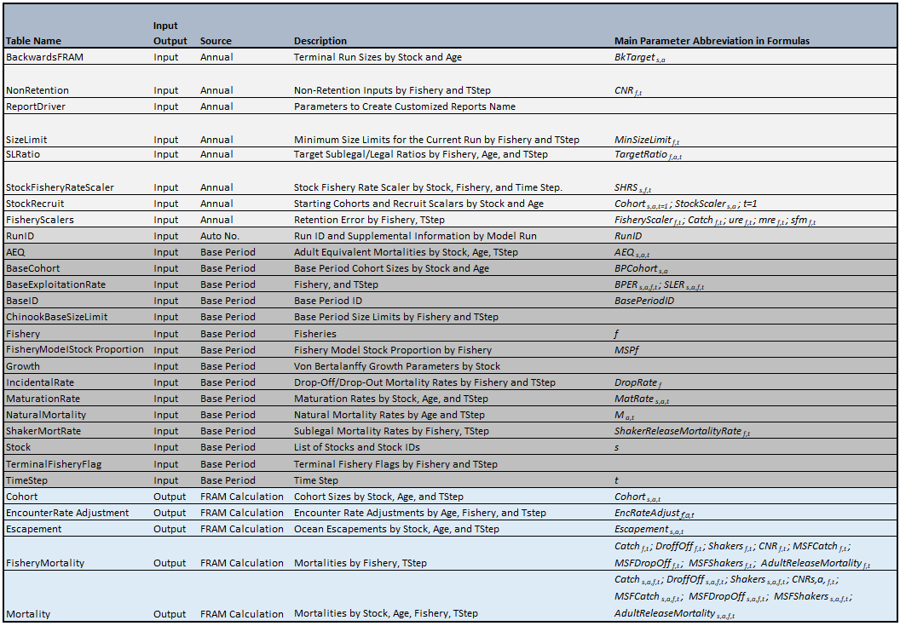

Chinook Model Detail
1. Chinook Model Structure
1.1. Stocks
Currently, 39 stock groups are represented in Chinook FRAM. Each of these stock groups have both marked (adipose fin clipped) and unmarked components to permit assessment of mark-selective fishery regulations; therefore, the current version of FRAM has a total of 78 stock units (Appendix 2). Each stock unit includes four age classes: 2s, 3s, 4s, and 5+.
Model stocks may represent an individual salmon stock or an aggregate of stocks from the same region. Stock units represented in FRAM were chosen based on the level of management interest, their contribution to PFMC fisheries, and the availability of representative coded-wire tag (CWT) recoveries in the Regional Mark Information System (RMIS). For Chinook stock profiles listing hatcheries selected to represent the stock aggregate during calibration, tag codes, growth functions, etc, see Base Period Stock Profiles.
Chinook FRAM includes most stock groups originating from the California Central Valley (Sacramento River), Oregon coast, Columbia River, Washington coast, Puget Sound, and Southern British Columbia. However, not all stocks along the West Coast of North America are represented. Some of the stocks that are not represented in Chinook FRAM include all those originating from California with the exception of Sacramento River fall Chinook, Oregon stocks originating south of Elk River, Mid and Upper Columbia River spring Chinook, Snake River spring and summer Chinook, and Canadian stocks originating north of Georgia Strait.
1.2. Fisheries
FRAM includes fisheries from southeast Alaska, Canada, Puget Sound, and off the coasts of Washington, Oregon, and California. The 73 fisheries in Chinook FRAM are designed to account for most of the fishing-related impacts to modeled Chinook stocks. A unique fishery identification number and fishery name for each of the FRAM fisheries are listed in Appendix 4 for Chinook. Terminal fisheries in Chinook FRAM are aggregations of gear and management areas. FRAM can model non-selective fisheries, mark-selective fisheries, and non-retention fisheries, and also calculates fisheries-related incidental and sublegal mortalities.
1.3. Time Steps
Chinook FRAM consists of four time periods (Table 1). Because the fishery management cycle year (May 1 to April 30) for Chinook is out of sync with the time at which most Chinook in the model age up (October 1), Chinook FRAM both begins and ends with an October to April time step.
Table 1. Time steps of Chinook FRAM.
| Time Step | Months |
|---|---|
| 1 | Preceding Oct. - April |
| 2 | May - June |
| 3 | July - September |
| 4 | Oct. - April |
The time step structure used in FRAM represents a level of resolution that balances data availability, fishery management structure, and species-specific migration and maturation schedules. The amount of available CWT recovery data (used to estimate model parameters such as exploitation rates and maturation rates) limits the time-step resolution of the model, as these data are stratified by stock unit, age class, and fishery.
Reducing the duration of time steps decreases the number of CWT recoveries, and thereby increase the variance of the estimated parameters in those strata. Accordingly, time steps were defined at a minimum resolution needed for fishery management purposes. During each time step, a cohort undergoes natural mortality, and can be subjected to pre-terminal fisheries, maturation, and terminal fisheries.
2. Assumptions and Limitations
The model has several major assumptions and limitations.
CWT fish accurately represent the modeled stock. The model parameterization depends on CWT recoveries, overwhelmingly from hatchery origin production. The model therefore assumes that the distribution and exploitation of the tagged fish in each stock unit are the same as that of untagged fish.
Stock distribution and migration are constant from year to year and is represented by the average distribution of CWT recoveries during the reference base period. Annual variability in the distribution and migration patterns of Chinook and Coho salmon stocks remains an active area of research.
Each stock unit and age class is exploited as a single pool. All pre-terminal fisheries operate on the entire cohort simultaneously in each time step and all terminal fisheries operate on the mature run. Thus, base period exploitation rate parameter differences may implicitly account for some within-timestep spatiotemporal patterns, but dynamics such as the sequence of interceptions in fisheries that occur in different months or at different positions along a returning migratory path are not explicitly modeled.
Length at age is stock specific and is constant from year to year. The proportion of an age class that is of legal size in size-limit fisheries is determined using the von Bertalanffy growth function. It is assumed that growth in the current model year is similar to that in the years used to estimate the growth parameters (McHugh et al. 2015).
Age-specific maturation rates vary by stock but are constant from year to year. Maturation rates are calculated on a stock, age, and time step-specific basis from cohort reconstructions during the base period calibration. This assumes maturation rates during the base period years adequately characterize those in any given model run year.
Natural mortality is constant from year to year. Rates for Chinook are age and time period specific and yield the same total annual natural mortality rate used in the Pacific Salmon Commission (PSC) Exploitation Rate Analysis (PSC 2021).
Release mortality and drop-off rates are fishery and time step specific and constant between stocks and from year to year. Note: mortality rates can be updated, but this is done very infrequently; i.e., only a few rates have been updated in the past 30 years.
Fish in a specific time/area/fishery stratum do not experience multiple gear encounters. The catch equations used in the model are discrete and not instantaneous, so that fish are assumed to be vulnerable to the gear only once within each time/area/fishery stratum. Potential bias in the estimates may increase with large mark-selective fisheries or longer time intervals, both of which increase the likelihood that fish will encounter a gear more than once.
3. Model Parameterization
The numeric inputs needed to run FRAM are stored as tables in a Microsoft Access database, along with tables containing resulting model outputs.
These input tables consist of:
- static, base period parameter values derived or agreed to during the process of calibration (e.g., base period exploitation rates, natural mortality rates, growth rates) and
- annual stock and fishery values including forecast or observed run sizes, catch in a fishery: a quotas, size limits, etc.
The main FRAM outputs are estimates of mortalities (landed, mark-selective, sub-legal, non-retention, drop-off) and abundances (starting cohorts at each time step; abundances after natural mortalities, pre-terminal, and terminal fisheries).
Table 2. Chinook FRAM Microsoft Access Database Tables.

3.1. FRAM Input Data
FRAM input data consist of two main input types: base period reference data and annual data. Base period data remain constant until a new base period replaces the existing one.
The principal inputs stemming from the base period are stock-age-fishery-time step specific exploitation rates. Other base period parameters include maturation rates, adult equivalency (AEQ) values, cohort sizes, and model stock proportions (MSP).
The second input type consists of annual data that can vary with each model run, such as stock specific abundance estimates, fishery catches, size limits, etc.
3.1.1. Base Period Data
CWT recoveries are used to estimate model parameters such as age-specific time/area/fishery exploitation rates and maturation rates for modeled stocks. The years from which CWT recoveries are used to estimate these parameters are referred to as the “base period.” These parameter estimates are derived through species-specific cohort analyses. Each cohort analysis is a series of procedures that use CWT recoveries along with base period catch and escapement data to “back-calculate,” or reconstruct, a pre-fishing cohort size for each stock and age group using assumed natural mortality and incidental mortality rates. See (Model Evaluation Workgroup, 2008) for a more detailed description of the cohort analysis procedures.
The model base period data for Chinook FRAM are derived from cohort reconstruction based on aggregated CWT data from several consecutive brood years. Currently, the Chinook FRAM base period is calibrated using escapement, catch, and CWT recovery data (fishing calendar years 2007-2013) from brood year 2005-2008 (2007-2009 for Central Valley) CWT releases. Not all stocks represented in the Chinook FRAM have CWT recovery data available from base period brood years (e.g., White River Spring Chinook); these stocks are categorized as “out-of-base” (OOB) stocks. Available CWT data for the OOB stocks are translated to equivalent base period recovery and escapement data using known fishing effort and harvest relationships between recovery years.
3.1.2. Annual and Semi-static Data
These data are comprised of six general types of input. Four of these input types (a, b, c, e) are submitted annually to reflect projected stock abundances and proposed fishery regulations for the current model year. The remaining two types of input (d, f) are specifications for fishery-related mortalities that can change as more information becomes available through additional data collection or studies, but typically do not change annually.
a. Cohort Abundance: For each stock unit, an annual abundance is obtained from regional experts, typically in the form of a terminal run size (TRS). In a pre-season context these abundances come from annual forecast predictions, whereas in a post-season context the abundances are estimates of actual returns. For Chinook, initial stock abundance estimates are needed by age class (ages 2 through 5) and mark status.
b. Size Limits: For Chinook, minimum size limits, as set by fishery regulations, are provided by fishery and time step.
c. Fishery Landed Catch: The model provides
three options for setting the
catch
in a fishery: a quota, a
fishery
scaler, and a
harvest
rate (for Puget Sound terminal fisheries only).
Quota:
Catch in the fishery is set equal to a numeric value input by the
user.
Fishery Scaler: The fishery is scaled relative to the
effort during the reference base period using a scaler value input by
the user. The catch resulting from a scaler is a function of base period
exploitation rates and stock abundances.
Harvest Rate: Using
the Puget Sound
TAMM,
a terminal area harvest rate can be applied to terminal area fisheries.
For a list of terminal fisheries see
Appendix
4.
FRAM inputs for quota and fishery scaler can be identified as either a conventional retention fishery or a mark-selective fishery and modeled accordingly. Modeling as a mark-selective fishery initiates additional calculations to estimate catches, encounters, and mortalities differently for marked and unmarked groups.
d. Release Mortality Rates: This is the mortality associated with the release of fish from hook-and-line and other gear types. Release mortality rates are designated by species, geographic area, fishery type, fishery size (legal vs. sublegal) and gear type (Appendix 7). Release mortality is assessed when Chinook are not retained (“non-retention” or CNR fisheries), when size limits apply, and in mark-selective fisheries. A number of studies have estimated release mortality for hook-and-line fisheries, and release mortality rates for both troll and recreational fisheries in the ocean have been formally adopted by the PFMC. For Chinook, release mortality rates differ between legal-sized fish (adult release mortality) and sublegal-sized fish (shaker release mortality). Release mortality in net fisheries with non-retention is estimated externally to FRAM and provided as an input to the model.
e. Mark-selective fisheries have two additional sources of mortality that are described as either the retention of an unmarked fish or the release of a marked fish that consequently experiences release mortality. The failure to release unmarked fish is a user input to the model called “Unmarked Retention Error” (ure or Retention Error Rate) and is the proportion of the legal-sized unmarked fish encountered that are retained. The release of marked fish is a user input to the model called “Marked Recognition Error” (mre) and it is the proportion of the legal-sized marked fish encountered that are released; these released marked fish are then subject to release mortality. These rates are updated annually based on fishery monitoring data.
f. Other Non-landed Mortality Rates (Incidental Mortality): This includes fishing-induced mortality not associated with directly handling fish. Drop-off mortality can occur when fish in sport and troll hook-and-line fisheries drop off the hook before they are brought to the vessel. Drop-out mortality occurs when fish in commercial net fisheries are not brought on board but die from injury as a result of encountering the net. For simplicity, both types are referred to as drop-off mortality in FRAM. Net drop-out mortality rates vary depending on species, net type, or timing (pre-terminal or terminal) of the fishery. In general, a 5% drop-off mortality rate is applied to the landed catch (or legal-sized encounters in fisheries modeled as mark-selective) to account for “other non-landed mortalities” in hook-and-line fisheries (Appendix 7).
4. Model Calculations
4.1. Overview
FRAM processes information through a time step loop, beginning with time step 1 and ending with time step 4 for Chinook. Within each time step, a series of five computational processes occur for each stock and age, as depicted in Figure 1: (1) determine starting cohort size, (2) removal of natural mortality, (3) removal of pre-terminal fishery mortalities, (4) maturation, and (5) removal of terminal fishery mortalities.

Figure 1. Conceptual flow chart for the Chinook FRAM model.
4.2. Computational Processes
In the following equations, variables are presented with origin specific formatting:
- Variables estimated in FRAM are shown in regular italics.
- Variables that are input by a user, including externally estimated values, are shown as bold.
- Variables that are estimated during the base period are shown with an underline.
- Variables that are estimated using a BkFRAM run are shown as blue.
Cohort Abundance
Process 1: Cohort abundance at the start of the time step
The starting cohort size in time step 1 is a product of two parameters: (1) the base period cohort abundance for stock s at age a (BPCohortss, a) and (2) a stock and age-specific recruit scaler (StockScalerss, a).
The starting cohort is generally calculated from pre-season forecasts or post-season assessments of terminal run size during Backwards FRAM (BkFRAM) calculations. BkFRAM produces starting cohorts by expanding terminal run sizes for maturation, preterminal fisheries, and natural mortalities (see Backwards FRAM chapter).
(1)
where Cohorts, a, t = 1 is the initial cohort size for stock s, age a, during time step t=1.
The starting cohort abundance in all subsequent time steps is determined based on the remaining immature cohort from the previous time step (see process 4 below). Chinook age between time step 3 and 4, so that, for example, age 2 fish in time step 3 become age 3 fish in time step 4. Since there are no age 1 fish in Chinook FRAM, the age 2 cohort in time step 4 is the same as the age 2 cohort in time step 1.
Natural Mortality
Process 2: Natural mortality within each time step
During each time step, the stock-age cohort size at the start of the time step is decreased to account for natural mortality:
(2)
where Ma, t is the discrete natural mortality rate for age a fish during time step t (Appendix 8).
Pre-terminal fisheries
Process 3: Pre-terminal fishery mortality
The remaining cohort is then subjected to removals by pre-terminal fisheries; both landed catch and non-landed mortalities associated with each fishery are calculated. FRAM simulates fishery mortalities using different processes depending upon the type of fishery: retention fishery (non-selective), non-retention fishery, or mark-selective fishery.
3a. In regular retention fisheries (non-selective), landed catch is estimated as:
(3)
where,
- BPERs, a, f, t
is the base period exploitation rate for stock s, at age
a, in fishery f, during time step t.
- FisheryScalerf, t
is an annual model input that relates expected effort in the model year
back to average effort during the base period.
- PVs, a, f, t
is the portion of the stock cohort s, at age a, during
time step t that is of legal size for fishery f
(i.e. portion vulnerable;
PV).
PV is calculated by FRAM using a
stock-specific
von
Bertalanffy growth function.
- SHRFs, f, t is the stock fishery rate scaler. This scaler is optional and can be used to adjust impacts for individual stocks in a fishery and time step; i.e., if FRAM output for an individual stock significantly deviates from expectations, then the user can make adjustments by providing a SHRF scaler. The stock fishery rate scaler was conceived to adjust the base period exploitation rate without the need to conduct a full calibration.
The FisheryScalerf, t is the foundation for the fisher simulation algorithms. FRAM can evaluate two general types of fisheries: catch-based or effort-based. For catch-based fisheries, the FisheryScalerf, t is computed by FRAM to obtain a user-specified catch level (i.e. a quota). This occurs in a two-step process. First, the fishery is modeled with a scaler of 1. FRAM then computes the ratio of target catch (quota) to modeled catch. This ratio becomes the final fishery scaler. For effort-based fisheries, the FisheryScalerf, t is specified by the user to reflect expected effort during the model year relative to the average effort observed during the base period.
3b. Drop-off mortalities are estimated by multiplying either a) landed catch in a non-selective retention fishery, or b) legal encounters in a mark-selective fishery, by a user-specified drop-off mortality rate (DropRatef see Appendix 7)
a) Non-selective retention fishery f:(4a)
(4b)
3c. Sublegal mortalities (Shakerss, a, f, t) are calculated for the portion of the cohort that is caught but cannot be retained due to size limit restrictions:
(5)
where,
- SLERs, a, f, t
is the sublegal encounter rate from the base period.
- ShakerReleaseMortalityRatef, t is the release mortality rate for sublegal fish in fishery f and time step t (Appendix 7).
There is only one FisheryScalerf, t to model both retention and sublegal mortality. The fishery scaler provided to FRAM is designed to achieve the expected catch in the retention fishery. Therefore, sublegal mortality is determined by the fishery scaler used to model the retention fishery, resulting in modeled sublegal mortalities that often do not match observations/expectations. To address this problem, sublegal mortalities can be adjusted by multiplication with an encounter rate adjustment (EncRateAdjustf, a, t). The encounter rate adjustment is computed in FRAM by multiplying landed (legal) catch for a fishery, age, and time step with an externally estimated sublegal/legal ratio (TargetRatiof, a, t), which can be provided as a user input.
(6)
(7)
where,
- Shakersf, a, t is the sublegal encounters summed over stocks in fishery f at age a during time step t.
- Catchf, a, t is the legal catch summed over stocks in fishery f at age a during time step t.
3d. Chinook non-retention (CNR) mortalities are estimated for time periods when fishing is allowed, but the retention of Chinook is prohibited.
Chinook non-retention mortalities are frequently modeled using inputs of total encounters (CNR Method 4) and inputs of legal and sub-legal encounters (CNR Method 3). Less frequently, they are calculated from the proportion of retention versus non-retention days within each time step (CNR Method 2). The original methods were developed to fit observations available from various fisheries. CNR Method 2, which has not been used in recent years, was developed for Canadian and Alaskan fisheries which had both retention and non-retention regulation periods in the same time step and had changes in the gear or fishing patterns to avoid Chinook encounters. CNR Method 1 is computed from relative effort of non-retention to retention period mortality and has not been used in many years.
Most Chinook non-retention calculations need the proportion of the legal (LegalPropTempCatchs, a, f, t) and sublegal (SublegPropTempCatchs, a, f, t) catch in a fishery and time step that is comprised of a given stock and age.
These proportions are computed in three steps.
Step 1: Compute legal and sublegal encounters by stock, age, fishery and time step as in equations 3 and 5 with a FisheryScaler of 1 (i.e., at base period effort)
(8a)
(8b)
Step 2: Compute the total fishery and time step catch by summing over stocks and ages.
(9a)
(9b)
Step 3: Compute the legal and sublegal proportion of the catch made up of a given stock and age.
(10a)
(10b)
where:
- LegalPropTempCatchs, a, f, t is the proportion of legal catch of stock s, age a, in fishery f, at time step t using FisheryScaler = 1.0
- LegalTempCatchs, a, f, t is the legal catch of stock s, age a, in fishery f, at time step t using FisheryScaler = 1.0
- MSPf is the fishery model stock proportion of fishery f as described in Chapter 4.6
- TotalLegalTempCatchf, t is the total catch in fishery f at time step t summed over all stocks s and ages a using FisheryScaler = 1.0
- TotalSublegTempCatchf, t are the total encounters in fishery f at time step t summed over all stocks s and ages a using FisheryScaler = 1.0
- SublegPropTempCatchs, a, f, t is the proportion of sublegal encounters of stock s, age a, in fishery f, at time step t using FisheryScaler = 1.0
- SublegTempCatchs, a, f, t are the sublegal encounters of stock s, age a, in fishery f, at time step t using FisheryScaler = 1.0
CNR Method 1 - Computed from relative effort of non-retention to retention period mortality (Fishery Scaler approach)
This method has not been used in many years and is currently under revision.
CNR Method 2 - Computed from ratio of non-retention to retention days
This method computes non-retention mortalities as a function of the retention input and the ratio of non-retention to retention days. FRAM calculates the legal catch (Catchs, a, f, t) and the shaker mortalities (Shakerss, a, f, t) as in equations 3 and 5.
This method requires a flag of “2” in the FRAM non-retention input user interface as well as four fishery inputs by time step.
- Field Value 1: Number of days the non-retention fishery is open within a fishery and time step (CNRDaysf, t)
- Field Value 2: Number of days the retention fishery is open within a fishery and time step (RetentionDaysf, t)
- Field Value 3: Legal selectivity rate (LegalSelRatef, t)
- Field Value 4: Sublegal selectivity rate (SublegSelRatef, t)
The legal and sublegal selectivity rates provide the modeler with the ability to adjust model output that is based on landed catch; i.e., if encounters in a retention fishery are twice as high as in a non-retention fishery, the sublegal selectivity rate would be 0.5.
(11a)
(11b)
where:
- CNRLegals, a, f, t is the non-retention mortality of legal Chinook of stock s, age a, in fishery f, at time step t
- CNRSubs, a, f, t is the non-retention mortality of sublegal Chinook of stock s, age a, in fishery f, at time step t
- LegalReleaseMortalityRatef, t is the mortality rate of legal encounters of stock s, age a, in fishery f, at time step t
CNR Method 3 - Computed from external estimate of legal and sub-legal sized encounters
For this method the modeler provides external estimates of legal (LegalEncf, t) and sublegal (SublegEncf, t) fishery encounters. FRAM split encounters into stocks and ages and applies separate a release mortality to legal and sublegal fish.
This method requires a flag of “3” in the FRAM non-retention input user interface as well as two fishery inputs by time step.
- Field Value 1: External estimate of legal encounters (LegalEncf, t)
- Field Value 2: External estimate of sublegal encounters (SublegEncf, t)
(12a)
(12b)
CNR Method 4 - Computed from external estimates of total encounters For this method the modeler provides an external estimate of total fishery encounters (TotalEstEncf, t) in Field Value 1 with a flag of “4” in the FRAM non-retention input user interface. FRAM first computes legal and sublegal encounters using a fishery scaler of 1 (equations 8a and 8b above). Next, FRAM calculates a CNRScaler to produce total encounters that match the target encounters (TotalEstEnc). After multiplying legal and sublegal encounters with the CNRScaler, a release mortality is applied to convert encounters into mortalities.
(13a)
(13b)
(13c)
where:
- CNRScalerf, t scales the FRAM catch to a modeler supplied target catch for fishery f during time step t
Calculation of the Total Chinook Non-Retention Mortality (CNRf, t)
CNRf, t is computed by summing non-retention mortalities over stocks and ages for legal and sub-legal Chinook and then summing legal and sublegal fishery, time-step CNR mortalities.
(14)
3e. Mark-selective fisheries (MSF) require additional computations to calculate both the landed catch and the mortalities due to the release of fish.
For marked stock units, the landed catch is calculated using an additional term to account for marked-recognition error (the release of a marked fish) and is fishery and time step specific (mref, t):
(15a)
For unmarked stock units, the landed catch is calculated using an additional term to account for unmarked retention error (the retention of an unmarked fish) and is fishery and time step specific (uref, t):
(15b)
Equations used to calculate adult release mortalities (AdultRelMort) in mark-selective fisheries must account for marked recognition (mre) and unmarked retention error (ure) for marked and unmarked stock units and utilize fishery and time step-specific release mortality rates (sfmf, t) (Appendix 7).
(16a) Marked:
(16b) UnMarked:
Computations for Chinook mark-selective fisheries must also account for sublegal mortality, which does not differ between marked and unmarked components, i.e., sublegal Chinook share the same fate in non-selective and mark-selective fisheries - they are released. Drop-off mortalities in mark-selective fisheries are calculated by multiplying the drop-off mortality rate with the number of legal encounters, as described in process 3b above.
3f. All pre-terminal fishery mortalities in time step t for stock s at age a are totaled (TotMort) and the size of the cohort is reduced accordingly.
(17)
The remaining cohort is then calculated as:
(18)
Fishery mortality in pre-terminal Chinook fisheries in FRAM can also be expressed in terms of adult equivalents (AEQ), which is the number of fish that would have survived to maturity and escaped to spawn in the absence of fishing. The AEQ factors adjust for the natural mortality that would have occurred between the time/age the fish were caught and the time/age that they would have matured. All age-5 Chinook in the mature time step and terminal fisheries have an AEQ factor of 1. The AEQ factor is calculated during base period calibration using maturation rates (MatRates, a, t) as:
(19a) For time steps 1 and 2:
(19b) For time step 3 (final base period time step):
AEQ = 1 for Chinook terminal fisheries, regardless of age.
(20)
Maturation
Once all pre-terminal fisheries have been processed and the associated mortalities have been removed from the cohort, a stock, age, and time step-specific maturation rate from the reference base period (MatRates, a, t) is applied to the remaining Chinook cohort. The mature portion of the cohort (MatureCohorts, a, t) is then available to those fisheries, during the same time step, that have been designated as harvesting only mature fish (terminal fisheries).
(21)
In the FRAM model, the majority of Chinook stocks mature in time step 3 (July - September). A few, mostly Spring Chinook stocks mature during time step 2 (May- June) and 3. Cowlitz and Willamette Spring Chinook mature in time step 1. For a table of maturation rates see Appendix 9.
After maturation has occurred, the remaining immature portion of the cohort becomes the initial starting cohort size at the beginning of the subsequent time step, where:
(22a) For time steps 2 and 3:
(22b) For time step 4:
(22c) Except:
Terminal Fishery Mortality
Terminal fishery mortality is calculated for the mature cohort only, using the same equations as for pre-terminal fishery mortality. Fishery mortalities are summed, and the remainder of the mature cohort constitutes the escapement from FRAM fisheries.
(23)
(24)
Escapement is the number of fish that remain in the mature cohort after removal of all terminal-area fishery related mortality. For Chinook, the FRAM escapement represents the ‘run-to-the-river’ as freshwater fisheries are not processed in FRAM.
TAMM Iterations
During a first pass, FRAM completes a run with the terminal fishery inputs stored in the FRAM database. These “seed” inputs usually stem from a previous model run. after this pass is complete, FRAM estimates terminal fishery impacts using values from TAMM and compares these to the original FRAM results; if the numbers are equal (less than 0.1% or fewer than 4 fish difference), the model is done. If these numbers are not equal, an iterative process is initiated during which TAMM terminal fishery impacts are used to adjust FRAM terminal fishery impacts until there is convergence (Figure 2).
Finally, FRAM sends the terminal marine and freshwater run sizes and fishing mortalities to the TAMM file for use in additional calculations and final reporting. For more information see Chapter 5.
4.3 Processing Schematic
To facilitate understanding of the sequencing of FRAM processing steps, Table 3 provides an example of how a Chinook stock’s cohort is processed by age and time step from starting cohort to escapement. For brevity, the table only shows ages 3 and 4, but these processing steps occur for all ages (2 to 5).
The starting cohort in time step 1 is first reduced by natural mortality. The remaining cohort is vulnerable to preterminal fisheries. After preterminal fishing, part or all of the cohort can mature. This typically occurs in time step 3, but for some early or late stocks can also occur in time steps 1 or 2. The mature cohort is then susceptible to terminal fisheries. The mature cohort not caught in terminal fisheries will go to escapement. The portion of the cohort that does not mature (number immature) becomes the starting cohort of the next time step. This cycle repeats until time step 4, when Chinook age up, i.e., age-3 fish become age-4 fish, etc. Immature Chinook of age a from time step 3 become the starting cohort of time step 4 age a+1. For age-2 fish, the time step 4 starting cohort is the same as the time step 1 cohort, because the model does not contain age-1 fish that could age-up.
Table 3. Example values of Chinook FRAM processing steps for a stock at age 3 and age 4.
4.4. Exploitation Rate Calculation
FRAM calculates stock specific mortalities and escapements that can ultimately be used to compute exploitation rates (ER). Exploitation rate calculations are not part of the main FRAM algorithms and are not calculated by FRAM. Since Chinook FRAM does not account for freshwater fisheries, ERs calculated using FRAM output represent only exploitation that occurs in marine fisheries (i.e., calculation of a total ER, summed over all fisheries, is not possible). Thus, total ERs are calculated for Puget Sound Chinook stocks in the TAMM file after processing additional freshwater fisheries and further delineating aggregated FRAM stocks to finer scale populations.
Exploitation rates are computed as the sum of all AEQ fishery mortalities divided by AEQ fishery mortalities plus escapement.
(25) $$ER_s = \frac{\displaystyle\sum\limits_a \displaystyle\sum\limits_{t \! = \! 2}^4 AEQTotMort_{s,a,t}}{\displaystyle\sum\limits_a \displaystyle\sum\limits_{t \! = \! 2}^4 AEQTotMort_{s,a,t} + \displaystyle\sum\limits_{a \! = \! 3}^5 \displaystyle\sum\limits_{t \! = \! 1}^3 Escapement_{s,a,t}}$$
It is noteworthy that mortality is calculated as the sum of time step 2 to 4 (May-AprilYear + 1), while escapement is computed as the sum of time step 1 to 3 (OctoberYear − 1-September). Hence, there is a misalignment between mortalities and scapement in the exploitation rate calculation. Time step 4 mortalities were chosen over time step 1 to account for fisheries that occur after September, as the fishery regulation cycle runs from May through April.
4.5. Size Limit Evaluations
FRAM models legal and sub-legal Chinook encounters through the use of the von Bertalanffy growth function (VBGF) for stocks that contribute to each fishery. The mean length of each stock at age at the midpoint of the time step is evaluated against the stock-specific VBGF to estimate the proportion vulnerable by stock, age, and time step. The algorithms from the PFMC (2008) (pgs. 18-19) FRAM documentation are as follows:
(26)
(27)
(28)
Chinook lengths at age for a particular time is assumed to be normally distributed with a variance that was calculated using observed lengths from CWT recovery data.
The following equations compute the proportion of the population (PV) that is larger than the modeler specified minimum size limit (MinLengthf, t).
(29)
The z-score (z) is usually interpreted using a standard normal table. This table provides the area between the mean and the z-score and allows the calculation of the probability that a value falls below a given point on the normal distribution. Below calculations incorporate an approximation of the equations resulting in the standard normal table’s probabilities.
(30)
(31)
(32)
(33)
(34)
Where:
- KTimes, a
= Substitute for salmon age a
in months by time step t for
stock s
- PVs, a, f, t
= Proportion vulnerable for stock s, age a, fishery f at time step t
- Ls =
The VBGF L∞
parameter for stock s
(Asymptotic mean length)
- Ks =
The VBGF Brody growth rate coefficient for stock s (Exponential rate of approach to
L∞)
- T0s =
The VBGF T0
parameter for stock s (Age
when the average length was zero)
- CVs, a
= Coefficient of variation of length distribution at KTimes, a
for stock s, age a
- MinLengthf, t
= Minimum size limit for fishery f, time step t
- MeanLengths, a, t
= Mean total length of a fish of stock s at age a at time step t
- zs, a, f, t
= The length z-score. It specifies the number of standard deviations the
MinLength
is away from the MeanLength
- Absz =
Absolute value of the z-score
For Chinook, the sub-legal and legal size encounters are stock- and age- specific and calculated using the VBGF described above. The calculations for sub-legal sized Chinook are shown below:
(35)
(36)
Where all components are defined previously and (1−PVs, a, f, t) is the proportion of the cohort for stock s, age a, not vulnerable to the gear at time step t.
Dealing with a Minimum Size Limit Change
Size limits specify the minimum salmon length that is legal to be retained. Fish below the minimum size limit must be released. When size limits are modeled in Chinook FRAM, each fish smaller than the size limit is treated as a sub-legal fish. Conversely, each fish larger than the size limit is deemed legal.
Mortalities of legal Chinook are calculated by applying a legal release mortality rate (LegalReleaseMortalityRatef, t) to the catch equation (see equation 3).
Mortalities of sublegal Chinook are calculated as shaker mortalities (see equation 5). This equation first computes encounters and then applies a sublegal release mortality rate (ShakerReleaseMortalityRatef, t).
FRAM uses different encounter rates to model legal and sub-legal fish. These rates are computed during the calibration process and are based on landed catch and encounter information during the reference base period years (2008-2013). As such, they reflect the size limit conditions existing at the time.
Having differing rates for legal and sub-legal encounters results in an uneven distribution of legal and sub-legal fish for a stock and age. Therefore, modeling a size limit change using traditional equations results in a change of total fishery encounters. This is a questionable outcome since the size limit is evaluated after a fish is encountered. Therefore, equations were incorporated into FRAM to hold encounters in a fishery constant, regardless of the size limit.
The simplest approach for evaluating a size limit change from the base period is to calculate legal and sub-legal encounters for both the base period and new minimum size limit and then adjust the differences so that total encounters remain constant. Encounter differences occur in the region between the base period size limit and the new minimum size limit (Figures 1-3).
Figures 1 to 3 illustrate the case when sublegal encounter rates are larger than legal encounter rates, but in FRAM the reverse is also possible.
## Warning: Using `size` aesthetic for lines was deprecated in ggplot2 3.4.0.
## ℹ Please use `linewidth` instead.
## This warning is displayed once every 8 hours.
## Call `lifecycle::last_lifecycle_warnings()` to see where this warning was generated.
Figure 1. Encounters as a function of cohort abundance and size limit dependent encounter rates. BPSL is the base period size limit.

Figure 2. Treatment of Legals and Sub-legals when the New Size Limit (FRAM SL) is smaller than the Base Period size limit. The shaded area designates the catch that FRAM is underestimating when the size limit is lowered.

Figure 3. Treatment of Legals and Sub-legals when the New Size Limit (FRAM SL) is larger than the Base Period size limit. The shaded area designates the catch that FRAM is overestimating when the size limit is increased.
When the new size limit is less than the base-period size limit, the difference in sub-legal encounters between the base length-limit and the new length-limit becomes legal encounter that is added to the legal encounters evaluated at the base-period size limit. The difference in encounters is used in this case because it incorporates the base-period sub-legal encounter rates, which are always different than the base period exploitation rates. It also allows for legal encounter estimates for stock and age combinations that do not have base-period exploitation rates because of the base-period minimum size limit restriction. This adds an important element of realism because there are stock-age combinations that would not have appeared in legal encounters under base period conditions, but may under the new limit.
When the new size limit is less than the base-period size limit, the correction can be calculated as:
(39)
(40)
(41)
(42)
(43)
(44)
(45)
When the new size limit is greater than the base-period size limit, the difference in legal encounters between the new size limit and the base-period size limit becomes sub-legal encounters. This encounter difference is added to the calculated sub-legal encounters from the base-period size limit to get total sub-legal encounters. The difference in legal encounters is used in this case because base-period CWT recoveries can be used to estimate an actual observed difference. The correction for when the new size limit is greater than the base-period size limit can be calculated as:
(46)
(47)
(48)
Where:
- BaseSublegalPops, a, t = Sub-legal Population at Base Period size limit for Stock s at Age a during Time Step t
- NewSublegalPops, a, t = Sub-legal Population at New size limit for Stock s at Age a during Time Step t
- BasePVs, a, t = Base Period Proportion Vulnerable for Stock s at Age a during Time Step t
- NewPVs, a, t = Proportion Vulnerable for Stock s at Age a during Time Step t under new size limit regulation
- SHRFs, f, t = Stock Specific Exploitation Rate Scalar for Stock s in Fishery f during Time Step t (default = 1)
4.6. Model-Stock Proportion
While the stocks included in Chinook FRAM account for the majority of the Chinook caught in FRAM fisheries, there are some stocks that are not represented in the model (see section 1.1). To account for these stocks, fisheries with non-model-stock impacts are supplied with an externally computed model-stock proportion (see Appendix 4). The Model-stock proportion (MSP) is a constant that is either calculated independently or produced during base period development. It represents the percentage of a fishery’s total catch that is accounted for by model stocks.
(49)5. Terminal Area Management Module
The FRAM program interacts with the Terminal Area Management Module (TAMM), a species-specific Microsoft Excel file, which allows users to specify alternative terminal fishery inputs and to calculate impacts on a finer level of resolution than FRAM. TAMM has separate sections for each of the six Puget Sound terminal regions (PSSMP) (Table 4) that are defined in the Puget Sound Salmon Management Plan (1985) for the State of Washington and the Treaty Tribes of Puget Sound. TAMM is best understood in its historic context. It is a terminal-area-centric fisheries model. Prior to FRAM development, information of stock-specific fishery impacts was not readily available. Management was based on terminal run reconstructions that assigned 100% of terminal catches to the local stock and computed terminal harvest rates as catch in the terminal area divided by terminal run size. To this day, TAMM inputs for terminal marine fisheries still include non-local stock impacts. FRAM takes these inputs from TAMM and accounts for non-local stock impacts before reporting stock specific impacts back to TAMM. Additional TAMM functionality also supports development of unique regional management goals and allows managers the flexibility to analyze and report FRAM model output according to their needs.
Table 4. Puget Sound Terminal Management Regions.
| Management Regions |
|---|
| Nooksack-Samish |
| Skagit |
| Stillaguamish-Snohomish |
| South Sound |
| Hood Canal |
| Strait of Juan de Fuca |
Common TAMM features:
- Receive user inputs for TAMM terminal fisheries
- Receive user inputs for TAMM stock abundances
- Receive user input for FRAM-TAMM stock management criteria (updated annually)
- Provide fishery inputs to FRAM during FRAM-TAMM iterations
- Receive FRAM output of fishery impacts on Puget Sound stocks (time steps 2-4)
- Use FRAM output to complete TAMM fishery impact modeling upon Puget Sound stocks
- Allocate marked and unmarked impacts to hatchery and natural units.
- Generate TAMM reports of combined FRAM and TAMM fishery impacts upon FRAM (and Chinook TAMM) stock units.
Chinook TAMM is a critical element of pre-season modeling for Puget Sound stocks, where management units tend to be smaller components of FRAM stock units. To achieve adequate stock representation in ocean fisheries, the current Chinook base period data aggregates FRAM stocks at a coarser level than is needed by management. The Chinook TAMM provides the ability to model individual marine and freshwater net fisheries in Puget Sound by the smaller time intervals associated with fisheries directed at Chinook, Pink, Coho, Chum, or Steelhead. In addition, test fisheries and fisheries in sub-areas can be specified. Similarly, the Chinook TAMM allows individual freshwater sport fisheries in Puget Sound to be modeled (see Figure 3).
To carry out fishery-specific impact analyses on all populations of interest, Chinook TAMM requires additional input of hatchery and natural abundances of Puget Sound Chinook populations and harvest impacts from additional Puget Sound fisheries. TAMM then sums the fine-scale fisheries impacts into FRAM-level impacts for subsequent input back into FRAM.
FRAM iteratively finds the fishery scalers that produce the same catches (CatchFRAM) as those supplied by TAMM (CatchTAMM) in Puget Sound fisheries (Figure 3). TAMM catches are either directly input into TAMM as catch values or calculated by TAMM with user input harvest rates (HR) multiplied by terminal run size (TRS). The TRS for a TAMM region/stock represents ‘run-to-the-river’ of a stock plus catches of all stocks in the terminal fisheries designated for that region.
FRAM calculations for each terminal area:
During a first pass, FRAM completes a run with the terminal fishery inputs stored in the FRAM database. These “seed” inputs usually stem from a previous model run. After this pass is completed:
- Sum escapements over appropriate time steps
- Add terminal catches (CatchFRAM) to calculate TRS (includes non-local stocks)
- Calculate the FRAM fishery
scaler that produces the CatchTAMM:
FisheryScaler(area,timestep) = CatchTAMM(area,timestep) ÷ CatchFRAM(area,timestep)
- Rerun FRAM and repeat these steps until CatchTAMM is within 0.1% (or fewer than 4 fish) of CatchFRAM.
Figure 3. Conceptual flow chart for FRAM-TAMM calculations.
6. Backwards FRAM
Backwards FRAM (BkFRAM) is a utility that determines FRAM starting cohorts when estimates of (extreme-) terminal run sizes and fishery catches (landed and non-retention) are provided. The program iteratively adjusts stock recruit scalers (a surrogate for starting cohorts, see equation below) and runs FRAM forward until the resulting escapements or terminal run sizes match the targets. For Chinook, BkFRAM calculates age 3 to 5 starting cohorts. Target abundances are generally closely aligned with historical definitions of terminal or extreme terminal run sizes (TRS, ETRS) used for pre-season forecasts or post-season accounting and exclude age 2s.
Post-season BkFRAM runs are generally conducted to create the starting cohorts that result in observed (extreme-)terminal run sizes given known fishery impacts. These cohorts are needed to calculate post-season exploitation rates. For Chinook, pre-season BkFRAM runs are generally conducted to create starting cohorts that result in forecasted (extreme-)terminal run sizes. These pre-season runs are regularly populated with recent year average fishery impacts to obtain ‘best’ estimates of pre-fishing abundances.
The Chinook algorithm uses forward (regular) FRAM calculations to solve for the stock recruit scaler needed to obtain a target terminal run size, given known time step fishery catches, natural mortality rates, and maturation rates. The only parameter changing between iterations are stock-specific catches, resulting in updated recruit scalers, resulting in new stock catches, etc.
(50)
where:
- BkTarget is the backwards FRAM run size target; escapement or (extreme) terminal run size
- BPCohort is the base period starting cohort abundance
- StockScaler is the stock recruit scaler (abundance)
The program iterates until the resulting FRAM escapement or terminal run size is within one fish of the target escapement or terminal run size and then terminates the iteration process.
(51)
where:
- FRAMescapement is the terminal run size resulting from a forward FRAM run.
7. Output Reports
Model results are available in FRAM screen reports viewed within the software, FRAM print reports, TAMM Microsoft Excel files, or can be extracted from the species-specific Microsoft Access database associated with the FRAM run. FRAM reports include summaries of projected catch and mortalities by fishery, stock, and age. The TAMM files provide comprehensive summaries of fishery mortalities, exploitation rates, run sizes, and escapements for key Puget Sound stocks in the PFMC and North of Falcon (NOF) annual pre-season planning process. Several external files are used by PFMC for specific Chinook model results, for the Snake River Fall Chinook Index (SRFL.xls) and lower Columbia River natural tule Chinook (Coweeman.xls). For a full scope of FRAM report generating functions, refer to the online FRAM User Manual.
To cite this page:
Salmon modeling and analysis
workgroup. 2023. Chinook Model Detail in FRAM Documentation. https://framverse.github.io/fram_doc/ built September
21, 2023.